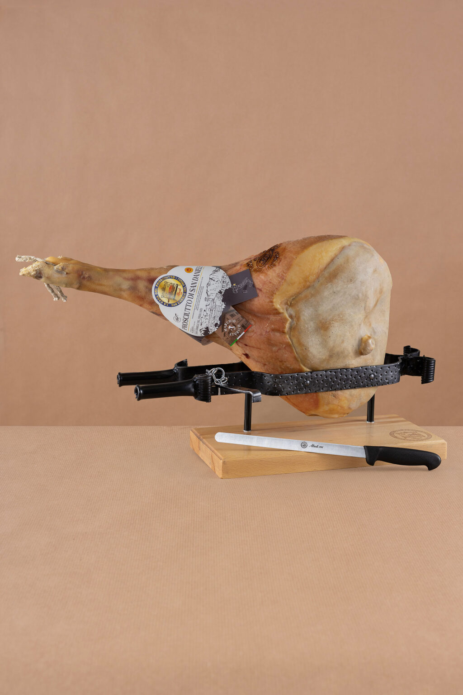

San Daniele al coltello
Kit completo · Kg 10,3
445,00 €−3%430,00 €IVA inclusa
Consegna express 24/48 h dalla partenza del lunedì · Carta, PayPal, bonifico
Tutto il necessario per tagliare il prosciutto intero a coltello: il prosciutto con osso, il coltello e il morsetto con base in legno.
Scheda tecnica
| Contenuto | prosciutto con osso, coltello, morsetto |
|---|---|
| Peso | Kg 10,3 |
| Ingredienti del prosciutto | coscia suina italiana, sale marino |
Cosa c’è nel kit
| Prosciutto intero con osso, 18–20 mesi, Kg 10–10,5 | 330,00 € |
|---|---|
| Coltello in acciaio AISI 420, 28 cm | 25,00 € |
| Morsetto in ferro battuto con base in faggio | 90,00 € |
Come arriva
Consegna express in 24/48 ore dalla partenza, che avviene il lunedì. Dopo l’acquisto ricevete via e-mail il link per seguire il pacco.
Spedizioni, pagamenti e recesso